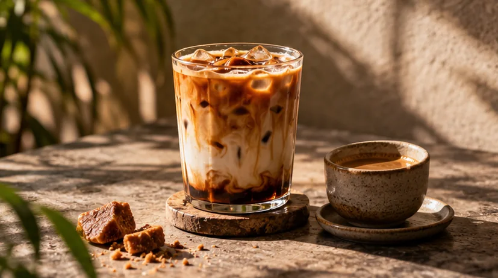
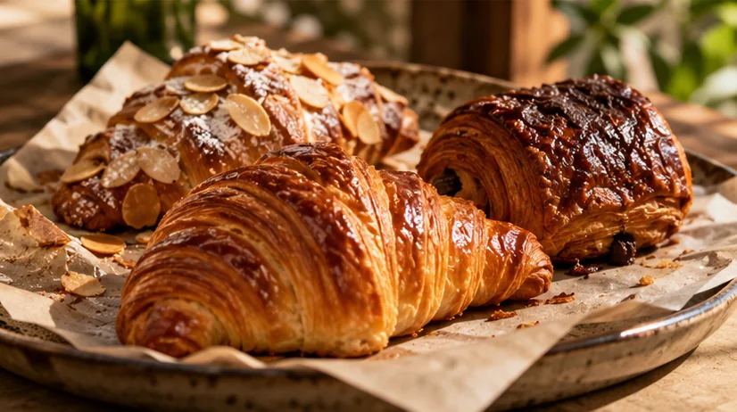

01 / THE SIGNATURE
LOCAL TWISTRM 18
Gula Melaka Latte
Deep espresso, smooth milk and the gentle caramel warmth of palm sugar.
KUALA LUMPUR, IN SPIRIT
A love letter to the little pauses, familiar flavours and good conversations that make any day feel a little more kita.


OUR STORY / CERITA KITA
There’s something special about the everyday coffee break. That first sip before the city wakes. An unhurried catch-up. A familiar kopi made just the way you like it.
KopiKita imagines a space where the warmth of Malaysian coffee culture meets the curiosity of a modern specialty café. No fuss, no pretence. Just thoughtful cups and little moments worth keeping.
HAND-PICKED HIGHLIGHTS / 02
Three small reasons to slow down. Thoughtfully imagined for the coffee-curious and comfort-loving alike.
Deep espresso, smooth milk and the gentle caramel warmth of palm sugar.

02 / THE TREATButtery layers, almond cream and a little crunch on top.
03 / THE CLASSICSmall in size, big in character. Two rich shots, nothing to hide.
* All items and prices are illustrative as part of this fictional café concept.
Showing all 30 selections
THE BEST PART OF COFFEE ISN’T ALWAYS THE COFFEE.
IT’S THE MOMENT AROUND IT.THE FEELING / 04
Warm light. Easy conversations. The clink of cups and the comforting smell of freshly brewed coffee. A little breathing space in a busy city.
That’s the atmosphere behind KopiKita: an imagined place that feels familiar, even on your first day.
Browse the coffee & bakes
Considered details.
Uncomplicated joy.
Always a little kita.
ONE MORE SIP BEFORE YOU GO
However you take your coffee, make time for the things that make you feel at home.